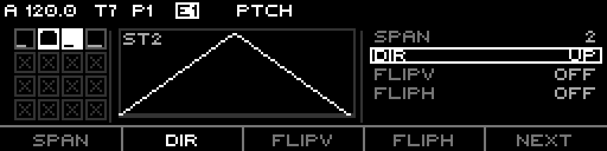
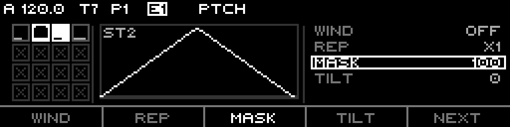

XFORMER PhaseFlux
A pulse-and-curve sequencer on a 4×4 grid. Each of the 16 cells is a stage that fires a burst of pulses across its slice of time — you draw where the pulses land with a temporal curve and what pitch each one plays with a pitch curve. The playhead walks the grid, the whole pattern loops as one cycle, and almost every shape is per-cell. It is a Note track turned inside-out: instead of one note per step, you sculpt a density of triggers and a contour of CV per step.
2 · How it differs from a Note track
3 · The grid, stages & the walk
4 · The cycle & timing
5 · Pulses & the temporal curve
6 · Pitch & the 0→1 phase
7 · Mask, phase-shift & windows
8 · Accumulators
9 · Macros & global phase
10 · The edit page
11 · Sequence & track pages
12 · Parameter reference
13 · What to expect
14 · Worked setups
1 · What PhaseFlux is
PhaseFlux is one of the eight track engines. Set a track's mode to PhaseFlux and it stops thinking in "steps that hold a note" and starts thinking in cells that emit pulses. The sixteen cells form a 4×4 grid. A playhead walks the grid in a chosen order; while it sits in a cell, that cell sprays out a programmed number of gate pulses, and a per-cell pitch curve decides the CV at every pulse.
Two independent shapes live in each cell:
2 · How it differs from a Note track
| Note track | PhaseFlux |
|---|---|
| 16/32/64 steps in a row | 16 cells on a 4×4 grid, walked in one of 8 orders |
| One step = one gate + one note | One cell = up to 16 pulses, each with its own CV from a curve |
| Step length is the divisor | Each cell has its own divisor slot and a length multiplier |
| Pitch is a stored value per step | Pitch is a curve evaluated over each pulse's phase |
| You place notes | You sculpt density (temporal) and contour (pitch) |
| Gate probability / retrig fields | Pulse mask, phase-shift, windows, repeats, dual accumulators |
It still shares the Performer chassis: a scale, a root note, a clock divisor, a clock multiplier, a reset measure, octave / transpose, play-mode, fill-mode — and it is fully routable like any other track.
3 · The grid, stages & the walk
The 16 cells are indexed left-to-right, top-to-bottom — cell 0 is top-left, cell 15 is bottom-right:
The Traversal setting (sequence page) picks one of 8 walks. Slot n of the walk visits a particular cell; the engine plays cells in slot order:
| Traversal | Walk |
|---|---|
Snake default | Top-down boustrophedon: row 0 L→R, row 1 R→L, row 2 L→R, row 3 R→L. |
Rows | Bottom-up, every row left→right (René mk2 Pattern 1). |
SnakeUp | Snake from the bottom row up (Pattern 2). |
Cols | Columns bottom-up, right column first (Pattern 3). |
ColSnake | Columns, zig-zag down/up alternating (Pattern 4). |
Spiral | Outward spiral from bottom-left (Pattern 5). |
Inward | Inner-to-outer counter-clockwise (Pattern 6). |
Diag | Anti-diagonal scan from bottom-left (Pattern 7). |
4 · The cycle & timing
One full pass over the grid is a cycle. The cycle's length is the sum of every cell's duration, and each cell's duration is built from three things:
The stage divisor slot is a musical fraction relative to the 1/16 reference (at the default sequence Divisor of 12):
| Slot | Factor | Length at default Divisor |
|---|---|---|
Sixteenth | ×1 | 1/16 |
EighthT | ×4/3 | 1/8 triplet |
Eighth | ×2 | 1/8 |
QuarterT | ×8/3 | 1/4 triplet |
Quarter cell default | ×4 | 1/4 |
Half | ×8 | 1/2 |
Bar | ×16 | 1 bar |
TwoBar | ×32 | 2 bars |
Adaptive vs Fixed cycle
A cell can be skipped (double-click its step). Cycle Length decides what a skipped cell does to the cycle:
- Adaptive default — skipped cells drop out; the cycle shrinks. Four active cells of 1/4 = a one-bar cycle no matter how many cells are skipped.
- Fixed — skipped cells keep their slot and emit silence; the cycle length is constant regardless of which cells are active (Note-track-like).
Reset, restart & idle
Reset Measure (0–128, 0 = off) re-anchors the cycle every N bars — a light reset that clears the held gate and pulse memory but preserves accumulator counters. If every cell is skipped the cycle length is zero and the track goes idle: the gate holds low, counters freeze, the last CV is held.
5 · Pulses & the temporal curve
Inside a cell's slot, Pulse Count (0–16) sets how many gate pulses fire. 0 = a silent cell (the slot's duration is still consumed). Where those pulses sit in time is the job of the temporal curve.
For each pulse the engine takes its even position (pulse i of N), then bends it through a pipeline before it becomes a trigger time:
- Temporal Curve —
Linear(even),Bell(dense in the middle),Bounce(three cascading exponential drops — a flam/roll feel). - Warp / Response (±63 each) — bend the timing before and after the curve. Positive crowds pulses one way, negative the other.
- FlipV — mirror the curve vertically. FlipH — mirror the finished schedule in time (the whole burst plays back-to-front, pitches mirror with it).
- Gate Length (0–100%) — each pulse's gate as a percentage of the gap to the next pulse.
0= that pulse is dropped (silence); very short computed gates are dropped or floored to stay audible.
6 · Pitch & the 0→1 phase
Every pulse also gets a CV. PhaseFlux derives it from a pitch curve evaluated at a phase φ ∈ [0, 1] — in Cell mode φ is the pulse's position in the cell, so the curve "plays through" once per cell visit. The curve's height maps to scale degrees over a chosen octave span:
The pitch pipeline mirrors the temporal one, then maps to a note:
- Base Pitch (±63 scale degrees) — the cell's anchor degree.
- Pitch Curve —
Ramp/Bell/Triangle/Bounce. - Span (Pitch Range) — how many octaves the curve covers:
0.5/1/2/3. - Direction —
Up(0→+span),Down(0→−span),Bipolar(centred, −½span…+½span). - Warp / Response (±63), FlipV, FlipH — same bends as the temporal axis.
The degree is then base + accumulator + octave×notesPerOctave + transpose, quantised through the
sequence's scale and root note. So pitch is always in-key.
Cell mode vs Global mode
Pitch Mode (sequence page) chooses how φ is driven:
- Cell default — each cell uses its own pitch curve, φ running 0→1 across the cell. Per-cell melodies.
- Global — one master pitch curve (cell 0's) is read by a free-running phase that never resets at cell boundaries. Pitch Rate sets how fast that phase advances as a P:T ratio against the cycle. A non-1:1 rate drifts a little each cycle, so the same grid evolves a long, slowly-rotating melody.
| Pitch Rate | Meaning |
|---|---|
1:1 default | Locked — phase completes exactly once per cell-unit, no drift. |
e.g. 5:7, 9:5 | 17 ratios from 1:7 up to 9:5; each drifts over several cycles before realigning. |
CV update timing
The track's CV Update setting decides when the CV pin moves:
- Gate default — CV only changes when a pulse fires (stepped, classic sequencer behaviour).
- Always — the pitch curve is evaluated every tick from the live cell phase, producing a smooth moving CV envelope between pulses — the curve becomes an audible contour, not just per-note pitch.
7 · Mask, phase-shift & windows
Pulse mask
Mask silences pulses by a fixed pattern — a built-in Euclid-ish thinner. A set bit mutes that pulse; Mask Shift (0–7) rotates the pattern:
| Mask | Keeps |
|---|---|
Off | every pulse |
1in2 | every other pulse |
1in3 / 1in4 / 1in8 | one pulse out of 3 / 4 / 8 |
2in3 / 2in4 / 3in4 | 2 of 3, 2 of 4, 3 of 4 |
Phase shift
Phase Shift (0–7) slides the whole burst by eighths of the slot — nudge a cell's pulses off the beat for swing or push/pull without touching its timing curve.
Window & Repeat per axis
Each axis (temporal and pitch) has its own Window and Repeat:
- Repeat —
x1 / x2 / x3 / x5. Splits the cell into R sub-sections and plays the (windowed) shape once per sub-section — a built-in ratchet/arp multiplier. - Window —
Off,Focus70 / Focus50(keep the centre 70%/50% of the curve),Polarize70 / Polarize50(keep the outer band, hide the middle). On the temporal axis a hidden band drops pulses; on the pitch axis it holds at the nearest visible boundary (no notes are lost, the contour just plateaus).
Melody mask & tilt
Mask Melody (0–100, 100 = bypass) and Tilt Melody (0–100) gate each pulse's note by its tonal centrality — how close the degree is to the root/fifth/thirds. Mask keeps the central (tonal) notes; Tilt keeps the outer (anti-tonal) ones; a note passes if either filter accepts it. This is the same centrality model the Stochastic track uses for its pitch mask.
8 · Accumulators
PhaseFlux has two independent accumulators per sequence — a Cirklon-style drift that nudges values a little further each time a cell (or pulse) fires:
Each accumulator shares the same controls:
| Control | What it does |
|---|---|
| Step (per cell) | How much this cell adds when it triggers. Note step UI-clamped to ±7; pulse step ±7. |
| Trigger (per cell) | Stage = advance once when the cell completes; Pulse = advance on every accepted pulse. |
| Order | Wrap (roll over at the limit) / Pendulum (bounce) / Hold (clamp) / RTZ (return to zero). |
| Polarity | Uni (bounds depend on step sign) / Bi (bounds span both limits). |
| Reset | Zero the counter every N cycles (0 = never). |
| Mode | Stage = each cell drifts on its own counter; Sequence = one shared counter (the whole pattern transposes together). |

The ACCUM.N page. The grid becomes a single 1×16 row; a small bar above each cell is its step
(pancake), the S/P glyph below is its trigger (Stage / Pulse). Left margin glyphs show Order,
Polarity and the Reset count. Footer: Ac.St·M:Sta·—·Order·Next.
Default span is generous: note limits ±28 degrees, pulse limits ±16. Counters survive a reset-measure and a restart; they only zero on a real pattern switch or a Reset-every-N hit.
9 · Macros & global phase
The MACRO topic holds five sequence-wide nudges that offset every cell at once — a quick way to push the whole pattern without editing 16 cells:
| Macro | Range | Effect on every cell |
|---|---|---|
| Warp Nudge | ±64 | Added to both axes' Warp. |
| Resp Nudge | ±64 | Added to both axes' Response. |
| Pulse Nudge | ±15 | Added to every cell's pulse count. |
| Len Nudge | ±64 | Added to every cell's stage length (stretches/squashes the cycle). |
| Cycle Warp (GWarp) | ±64 | Power-bends where in the cycle each cell sits — same total length, uneven spacing. |
Two more sit alongside them:
- Global Phase (0.00–1.00) — rotates the read position of the whole cycle by a fraction, so the pattern starts mid-way through. Borrowed from the Curve track.
- Snap to grid — a press-to-fire utility: rounds Global Phase to the nearest 1/16 and every active cell's length to the nearest whole project beat (never to zero). Zero resets the five magnitude macros.

The MACRO page drops the grid for a full-width scope — every active cell's temporal curve laid
end to end, live feedback as you turn the nudges. Footer: WarpN·RespN·PulsN·LenN·Next
(page 1 swaps to Phase·GWarp·Snap·Zero).
10 · The edit page PHFLX
The main editor opens on header PHFLX. It is organised into five topics cycled with
←/→, each with two or three pages cycled with
F5 Next:

The TEMP topic, page 0. Left: the 4×4 grid (filled = playhead, outlined = cursor with pulse bar,
crossed = skipped). Centre: the temporal density scope with one ring per pulse. Right: the four editable values.
Footer: Curve·Warp·Resp·Puls·Next (Warp selected).
Topics & pages
| Topic | Pages (F5 cycles) | F1 · F2 · F3 · F4 |
|---|---|---|
| TEMP | P0 / P1 / P2 | P0 Curve·Warp·Resp·Puls · P1 Len·FlipV·FlipH·Mask · P2 Wind·Rep·—·— |
| PTCH (Cell) | P0 / P1 / P2 | P0 Curve·Warp·Resp·Note · P1 Span·Dir·FlipV·FlipH · P2 Wind·Rep·Mask·Tilt |
| PTCH.G (Global) | P0 / P1 | P0 Curve·Warp·Resp·Rate · P1 Note·Span·FlipV·FlipH |
| ACCUM.N | P0 / P1 | P0 Ac.St·—·—·Order · P1 Reset·Polar·Trig·— |
| ACCUM.P | P0 / P1 | same layout for the pulse accumulator |
| MACRO | P0 / P1 | P0 WarpN·RespN·PulsN·LenN · P1 Phase·GWarp·Snap·Zero |
When Pitch Mode = Global, the PTCH topic shows as PTCH.G and switches to the two-page Global
layout (a single master curve + Rate). The header reflects this live.
Controls
| Control | Does |
|---|---|
| S1–S16 (step keys) | Move the grid cursor to that cell (drives the scope + param focus). |
| Double-click a step | Toggle skip on that cell. |
| Shift+step / hold steps | Multi-cell select — the encoder then edits all selected cells at once. |
| ← / → | Previous / next topic (resets to page 0, F1). |
| F1–F4 | Select that field for the encoder — except the binary FlipV/FlipH/Snap/Zero slots, which fire on press. |
| F5 Next | Cycle the topic's pages. |
| Encoder | Edit the selected field on the cursor cell (or all selected cells). Shift = coarse where supported. |
| Page+S16 / S15 | Shake — randomize the current page / whole topic (keeps stage length, base pitch, skip). |
| Page+Shift | Context menu: INIT (Stage / Topic / Sequence / Track) · COPY · PASTE · DUP. |
M:Sta /
M:Seq instead of an editable field — change the mode from the sequence list page (§11).Every page

TEMP P1 — Len·FlipV·FlipH·Mask

TEMP P2 — Wind·Rep

PTCH P0 — Curve·Warp·Resp·Note

PTCH P1 — Span·Dir·FlipV·FlipH

PTCH P2 — Wind·Rep·Mask·Tilt

PTCH.G P0 — master curve + Rate
Grid & LED feedback
On the OLED grid, a filled cell is the playhead, an outlined cell with a crossed box is skipped, and a thin bar along the bottom of each cell shows its pulse count. A dot top-left flags a non-zero phase shift; a dot top-right flags an active mask. On the hardware pads: red = playhead or cursor, green = the cell will fire (not skipped and stage length > 0), yellow = both.
11 · Sequence & track pages
The per-cell editor doesn't hold the sequence-wide settings. Those live on two list pages.
Sequence page
Header SEQUENCE — a scrolling list. Context menu adds INIT and a MOD+/MOD−
quick-route on the selected row:
| Row | Range / values |
|---|---|
| Divisor | clock divisor (default 1/16), routable |
| Clock Mult | 50–150 % (default 1.00×), routable |
| Global Phase | 0.00–1.00 |
| Pitch Mode | Cell / Global |
| Pitch Rate | 17 P:T ratios (1:1 default) |
| Traversal | Snake / Rows / SnakeUp / Cols / ColSnake / Spiral / Inward / Diag |
| Cycle Length | Adaptive / Fixed |
| Note / Pulse Accum Mode | Stage / Sequence |
| Warp / Resp / Pulse / Len Nudge | the four magnitude macros |
| Cycle Warp | ±64 (GWarp) |
| Scale / Root | inherit (Default) or override, routable |
| Reset Measure | 0–128 bars (0 = off) |
Track page
Track-global settings (one set per track, shared by all its patterns):
| Row | Range / values |
|---|---|
| Play Mode | Aligned / Free |
| Fill Mode | None / Gates / Next Pattern / Condition |
| CV Update | Gate / Always |
| Slide Time | 0–100, routable — global glide |
| Octave | ±10, routable |
| Transpose | ±60 scale degrees, routable |
12 · Parameter reference
Per-cell (stage) parameters
| Parameter | Range | Default | Meaning |
|---|---|---|---|
| Pulse Count | 0–16 | 4 (cells 0–3) | Gate pulses fired in the cell; 0 = silent. |
| Stage Divisor | 8 slots | Quarter | The cell's time slot (§4). |
| Stage Len | 0–127 | 64 (×1) | Length multiplier; 0 = silent, 127 ≈ 2×. |
| Skip | on/off | off (on for cells 4–15) | Drop the cell (Adaptive) or silence its slot (Fixed). |
| Base Pitch | ±63 deg | 0 | Cell anchor degree. |
| Pitch Curve | Ramp/Bell/Triangle/Bounce | Ramp | CV base shape. |
| Span (Pitch Range) | 0.5 / 1 / 2 / 3 oct | 1 | Octave height of the curve. |
| Direction | Up / Down / Bipolar | Up | Curve polarity. |
| Pitch Warp / Response | ±63 | 0 | Power-bend before / after the curve. |
| Pitch FlipV / FlipH | on/off | off | Mirror the curve / mirror in time. |
| Temporal Curve | Linear / Bell / Bounce | Linear | Pulse-timing base shape. |
| Temporal Warp / Response | ±63 | 0 | Power-bend the timing. |
| Temporal FlipV / FlipH | on/off | off | Mirror timing / play the burst backwards. |
| Gate Length | 0–100 % | 50 | Each pulse's gate width; 0 = drop. |
| Phase Shift | 0–7 | 0 | Slide the burst by eighths of the slot. |
| Mask / Mask Shift | 8 types / 0–7 | Off / 0 | Fixed pulse thinning + rotation. |
| Temporal / Pitch Window | Off / F70 / F50 / P70 / P50 | Off | Keep centre or outer band of the curve. |
| Temporal / Pitch Repeat | x1 / x2 / x3 / x5 | x1 | Sub-section ratchet multiplier. |
| Mask Melody / Tilt Melody | 0–100 / 0–100 | 100 / 0 | Tonal-centrality note filter. |
| Accum Step (note) | ±7 (UI) | 0 | Per-cell note-drift amount. |
| Pulse Accum Step | ±7 | 0 | Per-cell pulse-drift amount. |
| Accum / Pulse Trigger | Stage / Pulse | Stage | Advance per cell or per pulse. |
Per-sequence parameters
| Parameter | Range | Default |
|---|---|---|
| Scale / Root | inherit or override | Default (inherit) |
| Divisor | clamped divisor table | 1/16 (12) |
| Clock Multiplier | 50–150 % | 100 |
| Reset Measure | 0–128 | 0 (off) |
| Global Phase | 0.00–1.00 | 0.00 |
| Pitch Mode | Cell / Global | Cell |
| Pitch Rate | 17 ratios | 1:1 |
| Cycle Length | Adaptive / Fixed | Adaptive |
| Traversal | 8 patterns | Snake |
| Warp / Resp / Len / Cycle Warp Nudge | ±64 | 0 |
| Pulse Nudge | ±15 | 0 |
| Note Accum limits | ±28 | ±28 |
| Pulse Accum limits | ±16 | ±16 |
13 · What to expect
- A blank PhaseFlux track plays a steady 16-sixteenth bar — four cells, four pulses each, ramp pitch curves. It sounds like a fast quantised arpeggio out of the box.
- Drop a cell's pulse count to 1 and it's a single note; raise it to 16 with a Bounce temporal curve and it's a flam/roll.
- Pitch lands in-key automatically — the curve only chooses degrees within the scale, so even wild Warp / Bounce shapes stay musical.
- Accumulators make a static grid evolve: a small note step on one cell turns a loop into a slowly climbing line.
- Global pitch mode + a non-1:1 rate is the "generative" mode — the grid stays fixed but the melody drifts for many bars before repeating.
- Skipped cells in Adaptive mode change the bar length; if you want a fixed bar with rests, switch Cycle Length to Fixed first.
14 · Worked setups
1 · Four-on-the-floor with a rolling fill
Leave the default 4 active Quarter cells. On cell 3 set Pulse Count 8,
Temporal Curve Bounce, Gate Length 30 — three steady beats then a tumbling fill on
the fourth.
2 · One-cell evolving arpeggio
Skip cells 1–15 (Adaptive). On cell 0: Stage Divisor Bar,
Pulse Count 8, Pitch Curve Triangle, Span 2 oct,
Pitch Repeat x2. ACCUM.N Step +1, Order Wrap — an 8-note arp that
climbs a degree each bar and wraps.
3 · Generative drift line
Default grid. Sequence page: Pitch Mode Global, Pitch Rate 5:7. Set the
master curve (cell 0) to Bell, Span 3. Track: CV Update Always — a
smooth contour that re-phrases itself over seven cycles.
4 · Euclidean-feel hat line
One active cell, Stage Divisor Bar, Pulse Count 16,
Mask 2in3, Mask Shift 1, Gate Length 20 — a thinned 16-pulse pattern;
rotate Mask Shift live for variations.
5 · Polyrhythmic columns
Traversal Cols. Give each column a different Stage Divisor (1/4, 1/8, 1/4T, 1/2) so
walking down each column gives a different rhythmic feel; Cycle Length Fixed keeps the bar steady.
6 · Swung off-beat stabs
Two active cells, Pulse Count 2, Phase Shift 1 on the second cell,
Direction Bipolar, Span 1 — pushed off-beat two-note stabs around a centre pitch.